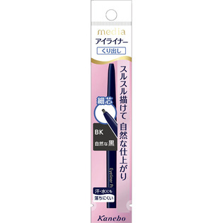
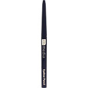

返回列表
产品名称：メディア アイライナーペンシルA 自然な黒

カネボウ化粧品 メディア アイライナーペンシルA 自然な黒 ＢＫ
メーカー カネボウ化粧品
JANコード 4973167006757
商品の特徴
くり出し
スルスル描けて自然な仕上がり
細芯
汗・水にも落ちにくい
成分・分量
＜配合成分＞
（カプリル／カプリン／ミリスチン／ステアリン酸）トリグリセリル、トリステアリン、水添ヤシ油、ミツロウ、マイクロクリスタリンワックス、水添ヒマシ油、水添パーム核油、タルク、水添パーム油、水溶性コラーゲン、トコフェロール、［＋／－］コンジョウ、酸化チタン、酸化鉄、マイカ
用法及び用量
＜使用方法＞
●まつ毛の生えぎわにそって、少しずつ軽いタッチで描いてください。